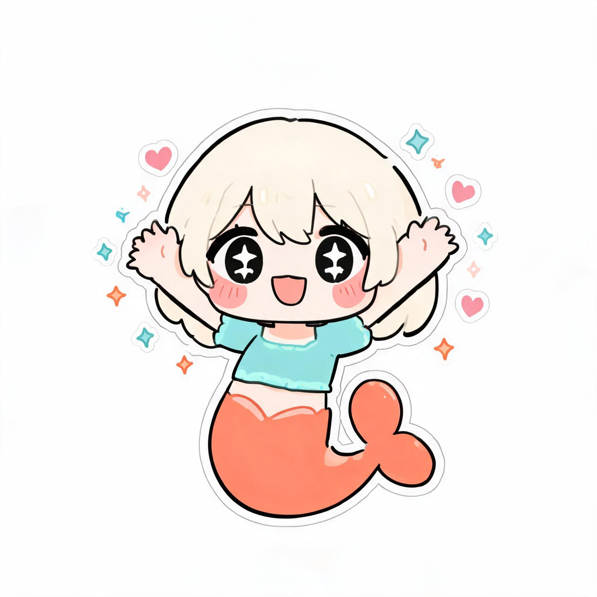

大肥鱼心情面板
正在读取心情…
会话
24 小时
7 天
30 天
每 8 秒自动刷新
刷新
总览
历史
会话
设置
此刻心情
平静
还没有记录到情绪变化
强度 · 轻
最近的变化
最近 8 条
心情曲线
悬停查看具体数值
五维变化
点的疏密取决于聊天频率
事件类型
活跃时段
情绪事件流
会话列表
最近 30 天内有互动的会话
会话
心情
亲密
最近互动
消息数
参数设置
保存后会自动重载插件
保存设置
危险操作
只影响当前选中的会话
重置当前会话心情
回到基线值，历史事件不会删除